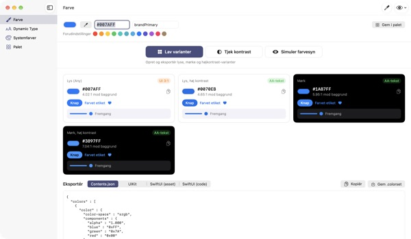
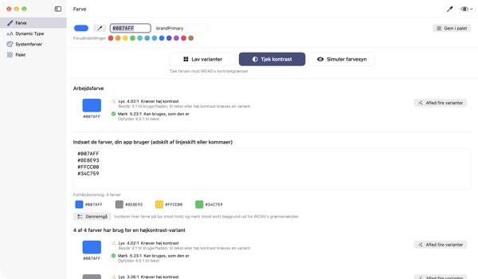
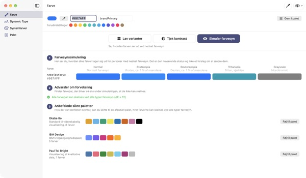
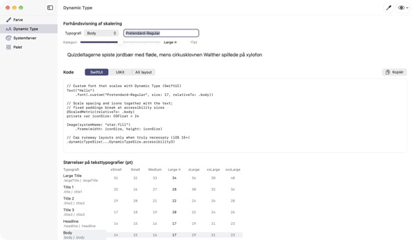

Én farve ind,
fire udseender ud
Systemfarver tilpasser sig selv mørk tilstand og Øg kontrast. Dine brandfarver gør ikke. TetraTint tager én farve fra lys tilstand, laver varianterne Lys, Lys med høj kontrast, Mørk og Mørk med høj kontrast og eksporterer dem direkte til Xcode.
Alle funktioner er gratis. Kræver macOS 14 eller nyere.

Prøv din brandfarve
Indsæt en hex-værdi, eller tryk på en forudindstilling. Med samme beregning som i appen ser du straks alle fire varianter og deres kontrast.
Er din brandfarve forsvundet i mørk tilstand?
Den blå, du valgte i lys tilstand, ser mudret ud på sort, og dem med Øg kontrast slået til kan knap læse teksten. At finde en farve til hvert udseende og regne kontrasten ud i hånden tager en halv dag. TetraTint udleder varianterne, som systemfarver skifter mellem udseender, og viser med det samme, om hver enkelt består.
Tjek alle dine farver på én gang
Indsæt hele appens hex-liste, og hver farve bliver vurderet: kan bruges, som den er, kræver høj kontrast eller kun til pynt.
Et klik gør en problemfarve til fire varianter i din palet. Det er en nem vej til at gøre klar til tilgængelighedsmærket Tilstrækkelig kontrast i App Store.

Se med farveblindes øjne
Se paletten med protanopi, deuteranopi, tritanopi og i gråtoner, og få en advarsel om par, der bliver svære at skelne.
Hent de farveblindvenlige paletter Okabe–Ito, IBM og Paul Tol med ét klik, eller brug øjeknappen øverst til højre til at se hele appen sådan.

Egne skrifttyper følger tekststørrelsen
Se alle 11 tekststile i 7 størrelser, og træk i en skyder for at se de rigtige størrelser.
Indtast skriftens PostScript-navn, og få kode til UIKit, SwiftUI og @ScaledMetric plus kode, der skifter layout ved stor tekst.

Kom i gang i tre trin
- 1
Tilføj en grundfarve
Indsæt en hex, tag en farve hvor som helst på skærmen med pipetten, eller vælg en forudindstilling.
- 2
Tjek de fire varianter
Læs kontrastmærkerne, og justér varianter, der ikke passer til brandet, med farvevælgeren.
- 3
Eksportér til Xcode
Kopiér eller gem som Contents.json, .colorset eller UIKit- og SwiftUI-kode.
Sådan laves varianterne, og det betyder mærkerne
- Lys (Any)
- Din farve, som du skrev den
- Lys, høj kontrast
- Lidt mere mættet og gjort mørkere, til den når 4.5:1 på hvid
- Mørk
- Lidt lysere og mere klar (lyshed +5, mætning +3)
- Mørk, høj kontrast
- Gjort lysere, til den når 7:1 på sort
- AA-tekst
- Mindst 4.5:1 mod baggrunden, fin til brødtekst
- UI 3:1
- Mindst 3:1, fin til knapper og ikoner, men ikke til tekst
- Lav
- Under 3:1, brug den ikke til tekst, ikoner eller status
- Eksport
- Contents.json · .colorset · UIKit · SwiftUI, eller hele paletten som én .xcassets
Referenceværdierne for systemfarver stammer fra Apples Human Interface Guidelines og kan ændre sig med systemopdateringer. I den færdige app skal du bruge API'erne til systemfarver.
Spørgsmål og svar
Er det virkelig gratis?
Ja. Alle funktioner er gratis, uden konto og uden reklamer. Har den hjulpet dig, kan du give drikkepenge under Indstillinger; det låser ikke noget op.
De genererede varianter passer ikke til vores brand.
Justér hver variant med farvevælgeren på dens kort. Lav alle om kasserer dine manuelle ændringer og udleder alt igen fra grundfarven.
Hvordan beregnes varianterne?
De følger, hvordan Apples systemfarver faktisk skifter mellem udseender: lidt lysere og klarere i mørk, mindst 4.5:1 på hvid i lys med høj kontrast og mindst 7:1 på sort i mørk med høj kontrast.
Hvad betyder en advarsel i farvesynssimuleringen?
At forskellen mellem to farver (ΔE) falder under 12 i den simulering, så de er svære at skelne. Brug ikke farve alene: tilføj ikoner, mønstre eller tekst, eller skift til en farveblindvenlig palet.
Hvordan får jeg en egen skrifttype til at understøtte Dynamic Type?
Indtast skriftens PostScript-navn under Dynamic Type, og vælg en stil for at få kode til UIKit, SwiftUI og @ScaledMetric. Ved tilgængelighedsstørrelser bliver Body over tre gange større, så undgå faste højder og lineLimit(1).
Eksporterede farver ser anderledes ud end systemfarverne i min app.
Referenceværdierne stammer fra Human Interface Guidelines og kan ændre sig mellem systemversioner. Brug altid API'erne UIColor eller Color til systemfarver.
Hvor gemmes min palet?
Kun på din Mac. Intet synkroniseres til skyen eller sendes nogen steder hen. Se privatlivspolitikken for detaljer.
Gemmes en farve, jeg tager med pipetten?
Nej. Kun farveværdien i det valgte punkt læses og bruges som arbejdsfarve. Intet billede af skærmen gemmes eller sendes.
Hvilke Mac-computere virker den på?
macOS 14 (Sonoma) eller nyere. Når du eksporterer, vælger du selv, hvor filerne gemmes.
Fejl, idéer eller spørgsmål? Skriv til leeo@kakao.com. Vi svarer normalt inden for 2–3 dage.